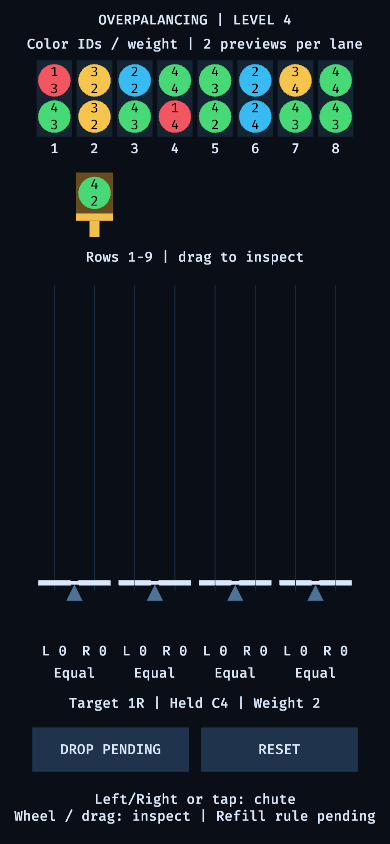

Level supply view
Status: preliminary guide. This proposed view replaces the manual placement sandbox controls with a level-driven supply and a tall playfield. It follows the composition of the owner-provided Swing reference while using original primitive graphics; no reference artwork or external assets are required.
Board composition
A compact header uses roughly the top tenth of the view for level and essential status. Eight supply columns occupy a shallow band above eight stack positions, paired into four seesaws at the bottom of a tall playfield. Each supply column shows two queued preview balls. A recognizable movable chute holds exactly one ball between the supply and playfield, with its selected destination indicated by text and a shape or outline. Placing the held ball immediately refills the chute; question 0010 still determines the refill source. Per-side accumulated weights remain near their corresponding seesaw bases.
The board is the main view. Remove the sandbox weight and color configuration buttons and the Lower/Higher inspection controls. Do not replace them with invented score, timer, life or failure rules from the reference screenshot.
Level configuration
A level numbered L uses exactly L distinct palette colors. Ball weights are generated within the configured range with a minimum of one. The confirmed default joker probability is five percent and is configurable. Jokers contain two or three colors from the level palette; level one has no jokers. There are two visible preview balls per lane and one held chute ball, which refills immediately after placement. The exact refill-source policy remains question 0010.
Portrait readability
At 390-pixel viewport width, preserve all eight columns and all four seesaws. Reserve two preview rows and a distinct held-ball chute row above the playfield, then preserve room for the nine-row lowered side under the common ceiling. Use compact ball labels on two lines: a concise color identifier above the numeric weight. Target at least 32–36-pixel ball diameter with readable labels; verify actual rendered text rather than relying on nominal font sizes. Other essential labels should remain at least 14 pixels, and touch targets at least 44 pixels where practical.
Assign stable numeric identifiers such as C1 and C2 to palette colors, including the selected-ball preview. Render only the colors needed by the visible scene; do not allocate an unbounded legend containing every color in level L. Distinct patterns or shapes should supplement fills when many colors are present. Multicolor balls must show their constituent identities and weight without implying an unconfirmed matching rule. Test the longest identifier and largest configured weight, not only the first colors.
Open interaction and rules
Chute movement must work with keyboard, pointer and touch; the refill source is awaiting confirmation under question 0010. The playfield has a common fixed ceiling. Balanced sides have eight free ball rows; the lowered side has nine and the raised side seven. Render the platform endpoints one actual ball-row below or above the balanced height, rather than showing only a shallow rotation around unchanged endpoint heights. This guide does not choose launch triggers, matching, compression, scoring or overflow loss conditions; overflow behavior remains question 0011. Tall stacks must retain their actual contents. A viewport can support wheel and touch-drag inspection without dedicated Lower/Higher buttons, provided it shows an understandable visible-row indication. Drag inspection must not also trigger a tap action: use a movement threshold and separate viewport movement from ball consumption. This is a presentation option, not a new capacity or loss rule.
Verification status
No implementation or render acceptance is claimed. Review must inspect the actual 390-pixel portrait and desktop scenes, all eight source/destination alignments, color and weight readability, selected-target visibility, tall-stack handling and confirmed input behavior. Phone execution remains separate from Linux screenshots and synthetic touch tests.
Track unresolved decisions in the question register.
Work-in-progress render evidence
On 2026-10-20 the lead rendered level 4 with software Vulkan and resized the actual window to 390×844 after moving the chute. Two previews per lane and an independent held ball are visible. The drop action remains disabled pending question 0010; no interactive placement or overflow-policy acceptance is claimed. Twenty-one core/app tests, Clippy, doctests and Rustdoc pass.
